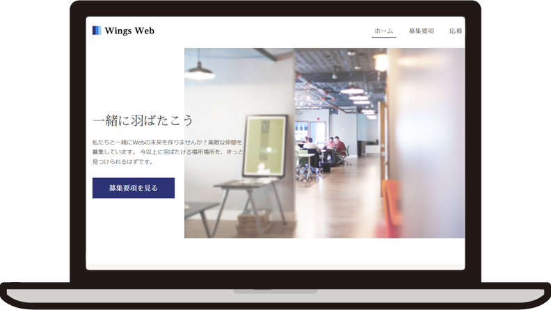
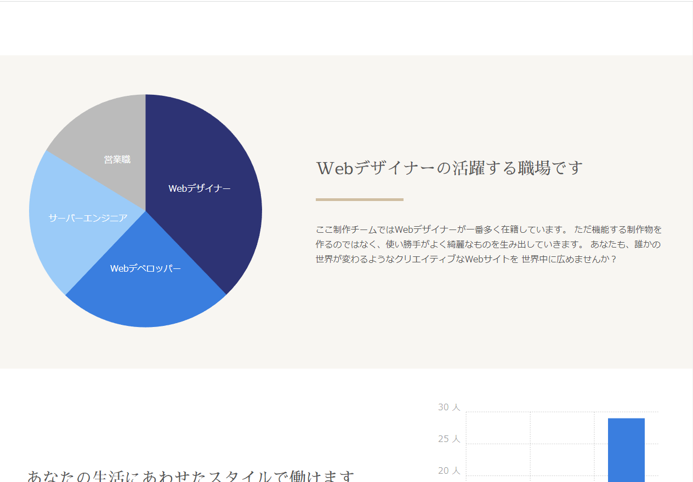
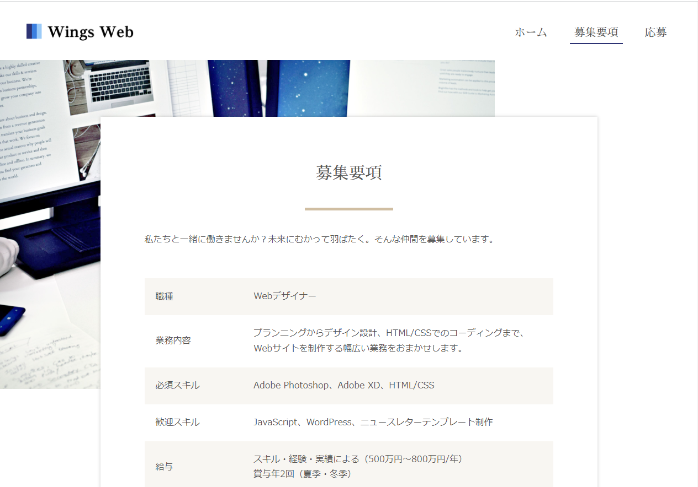

03 WEB

01.コンセプト
とある企業のサイトを制作しました。 オフィス感があるデザインにしてシンプルに 伝わりやすくしました。
02.使用ツール
HTML CSS JavaScript
03.制作期間
一ヶ月
シンプルな配色にして落ち着いたデザインにしました。 グラフをJSで作成し下層ページのアイコンもCSSで作成しました。 下層ページのデザインやフォームも工夫して制作しました。
05.完成作品

